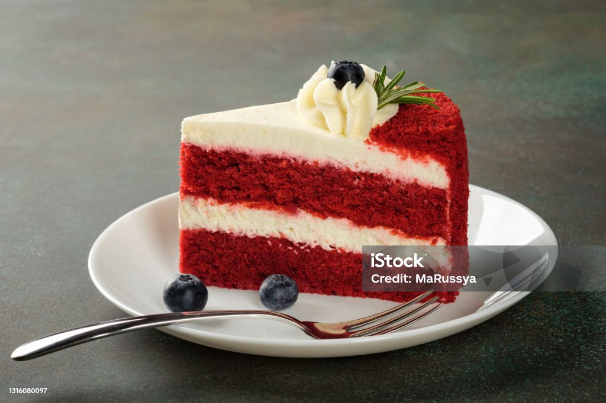

Red velvet Cake
Red velvet cake is much more than vanilla cake tinted red. This recipe produces the best red velvet cake with superior buttery, vanilla, and cocoa flavors, as well as a delicious tang from buttermilk. My trick is to whip the egg whites, which guarantees a smooth velvet crumb.
Ingrediant
- Mild cocoa flavor
- Tangy buttermilk
- Sweet vanilla
- Very buttery
Directions
- Cake flour: Buttermilk is tangy, creamy, and makes baked goods extremely moist. You can’t make delicious red velvet cake without it! Additionally, buttermilk helps activate the baking soda to leaven the cake. Buttermilk: Buttermilk is tangy, creamy, and makes baked goods extremely moist. You can’t make delicious red velvet cake without it! Additionally, buttermilk helps activate the baking soda to leaven the cake.Buttermilk is tangy, creamy, and makes baked goods extremely moist. You can’t make delicious red velvet cake without it! Additionally, buttermilk helps activate the baking soda to leaven the cake.: I highly recommend cake flour. Cake flour is much lighter than all-purpose and the perfect base for a light, soft-crumbed cake texture. Like I mention above, red velvet’s texture is important to the authenticity of the flavor. You will thank me for the recommendation after you taste how incredibly soft this cake is. It’s the texture you find at professional bakeries.
- Unsweetened Cocoa Powder: 2 Tablespoons is plenty for a little cocoa flavor without overpowering the vanilla and butter flavors.
- Butter & Oil: What sets red velvet cake apart from chocolate is its buttery flavor. With only butter, we risk a dry cake. With only oil, we lose the butter flavor and softness that comes with creaming butter & sugar together. So all that’s to say, use both butter and oil. Moist texture, soft and cakey texture, buttery flavor.
- Buttermilk: Buttermilk is tangy, creamy, and makes baked goods extremely moist. You can’t make delicious red velvet cake without it! Additionally, buttermilk helps activate the baking soda to leaven the cake.
Tips
I add one simple step to this red velvet cake recipe and it guarantees the BEST texture.